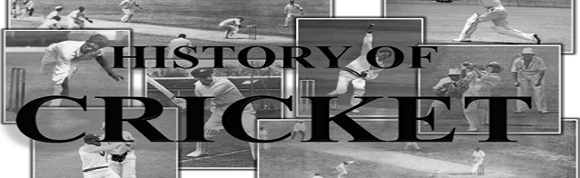
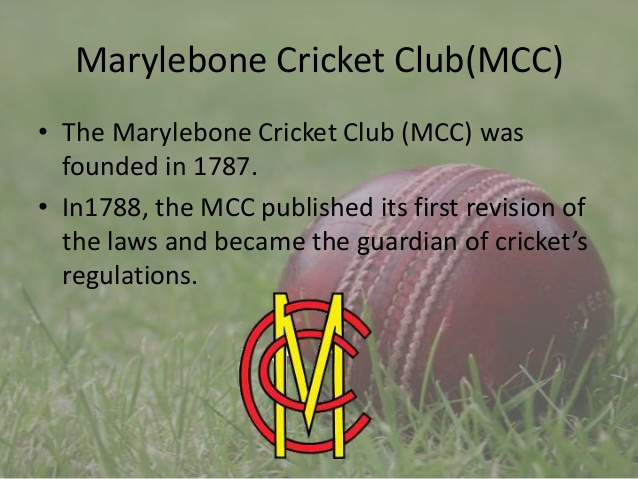
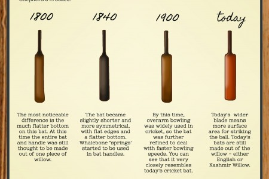
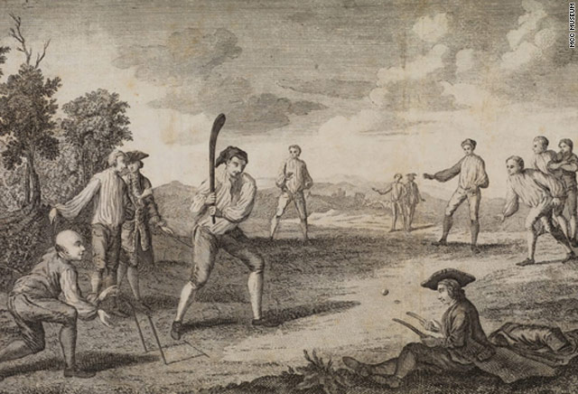
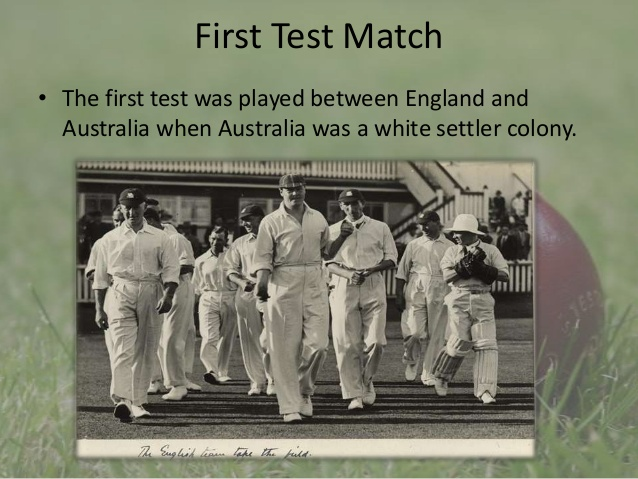

Cricket history is particularly murky and vague as to the exact origins of the game, it is believed to have been born in England in the late middle ages.Edward III banned a game similar to cricket in 1369, ‘pila baculorea’ or ‘club ball’ as it was known, as he saw it as being a distraction to his war effort.Derek Birley in his wonderful book, ‘A Social History of English Cricket’ suggests the game came to England with the French during the time of the Norman Invasion, that their word ‘criquet’ was the dialect name for a variation of club ball, the game Edward the III had sought to eradicate.There is record of the word ‘creag’ as a derivative of the word creaget in 1299-1300 in the Royal Wardrobe Accounts, for the then Prince Edward the II to play ‘creag’ and other games.There is no evidence that creag was the same as criquet, the links are too tenuous and games rarely appear in any records of this time unless the aristocracy were playing them or trying to have them eradicated as being morally degenerate.
Cricket is first recorded as a game played by schoolboys in Guildford in the sixteenth century and is found recorded in an Italian -English dictionary in 1598.
The game by 1611 was being played by adults, it is recorded that two men were prosecuted for playing cricket instead of attending church.On a similar theme, in 1628 ten men were fined for playing cricket rather than attending church service, they also had to make a confession to the congregation as way of penance.As the game continued to evolve amongst the working classes and the aristocracy, gambling became central to its growth.The aristocracy in particular, had seen in it, a game with the obvious attributes to bet on its outcomes. Teams were assembled under the patronage of Aristocrats and purses were put up for ‘great matches’.In 1696, ‘ a great match at Cricket was played in Sussex, they were eleven of a side, and they played for fifty guineas apiece’.The game had been growing both within the english upper classes and as a genuine recreational past time for rural workers in the southern counties of England.The composite teams that were beginning to be assembled for ‘great matches’ during this period of the early 1700’s, were crossing the class divides; as the purses played for encouraged the nobility that were patronizing the teams, to employ the best players that could be found.Thus, rural workers who had become adept at the game were being employed to play as ‘hands’ for the aristocracy and were travelling for their employ.At this time London, particularly North London, can lay claim to being the cradle of the game as matches staged in Islington at White Conduit Field had a ‘field keeper’ for cricket and the Angel Inn as part of its amenities.In 1718 a match at White Conduit Field brought cricket into the law courts after a dispute between the two teams.The other area to lay claim to the ‘Cradle of Cricket’ was Hambledon in Hampshire, where the matches staged at the Broad Down of Halfpenny were where cricket began to ‘ assume that truly skilful and scientific character which it now possesses.’The men of Hambledon were immortalised in the writing of John Nyren, who captured the spirit of the club, its segregation between the classes and its rich and varied club life.The game continued to spread through England as the provincial towns grew with industrialization, with the first recorded game in Yorkshire played in the 1750’s.
The Laws of the Game

By 1744 the Laws of Cricket had been codified and in 1788 the laws were revised by the Marylebone Cricket Club, they covered the length of the pitch, the distance between creases, wicket size, and ball weight.After 1760 the game saw the evolution of over arm bowling, replacing under arm bowling as the main way to deliver the ball. The game began to see the use of various lengths utilised by bowlers and the development of the craft of batting, as batters sought to respond to new bowling techniques.The ‘Straight Bat’ was introduced as part of this counter to new bowling techniques, the old bent ‘hockey stick’ style of bat went out of fashion.
See the pictures here from a display at the Lords Museum that show the bats evolution


Cricket began to spread with Britains’ Imperialist ambitions, the Navy and Army were instrumental in its spread into the Colonies, with games being recorded in North America in the 1700’s.
In the 1800’s cricket had reached the West Indies and India, by 1788 at the inception of colonization in Australia the game was played and in the 19th century cricket had reached and was being played in South Africa and New Zealand.The first International match was staged in New York in 1844 between Canada and the United States. In 1868 an Australian Aboriginal side toured England and by 1877 England played their first match against Australia to begin the games oldest rivalry.In 1882 England lost to Australia, a mock obituary was written for English cricket and two Melbourne ladies burnt a bail and presented it to the England cricket captain in an urn.Thus began the Ashes,the games longest running saga as the two sides play off every two years for the fabled urn.In 1889 South Africa became the third test nation.In 1900 cricket made its one and only appearance at the Olympics, England played France and won. Although interestingly, it looks as if cricket may be re-admitted to the Olympics in its shortest form, 20 20 cricket.By 1909 the Imperial Cricket Conference was formed to administrate the game, primarily from an English perspective, with England, South Africa and Australia being its founder members.India, the West Indies and New Zealand saw them become Test playing nations before the second WW, Pakistan joining after.Affiliate nations like Sri Lanka, formerly Ceylon, Zimababwe and Bangladesh have become Test playing nations toward the end of the twentieth century.

The Twentieth Century saw major crises in cricket, initially in the bodyline series in 1932 -33 between Australia and England.Englands’ method of countering the genius of Don Bradman lead them to bowl to a leg side field with short pitched bowling. The Australians deemed this ‘not cricket’ and against the spirit of the game. It was an event of such proportions that Australia threatened to take political action they were so disturbed by it.Then in the 1970’s the D’Oliveira Affair blew South Africa from the international cricket stage for over twenty years, as they refused to receive the England team with the Cape Coloured Basil D’Oliveira in it.Its racist policies saw it cast into the wilderness only to return after the release of Nelson Mandela and the institution of multi racial cricket.The 1960’s and 70’s saw the introduction of single innings games, with the first class sides in England playing limited over cricket, these proved hugely popular and cricket saw its first One Day International in 1971 between England and Australia.In the mid 1970’s an Australian Media Mogul, Kerry Packer, bought up the worlds best cricketers and set up World Series Cricket, the players played in coloured clothing. Packer took on the cricket establishment in a legal battle for the right to host and televise games and won.World Series Cricket went a long way to professionalising the game in the 1970’s and allowing the players a living wage from their profession.
As the One Day game developed it brought with it some of the innovations from Tennis and American football, the use of technology to bring better decision making for umpires and to highlight areas of interest for the TV audience.Beginning with slow motion replays and specialist camera angles for Umpires, the game now has space age technology with ‘Stump Cams’,’Hot Spots’ and ‘Hawk Eye’, technology derived from modern warfare.Whether technology has improved the decison making of Umpires remains to be seen, there have been breakdowns in the application of technology and its lack of uniform roll out across all international games undermines its credibility.